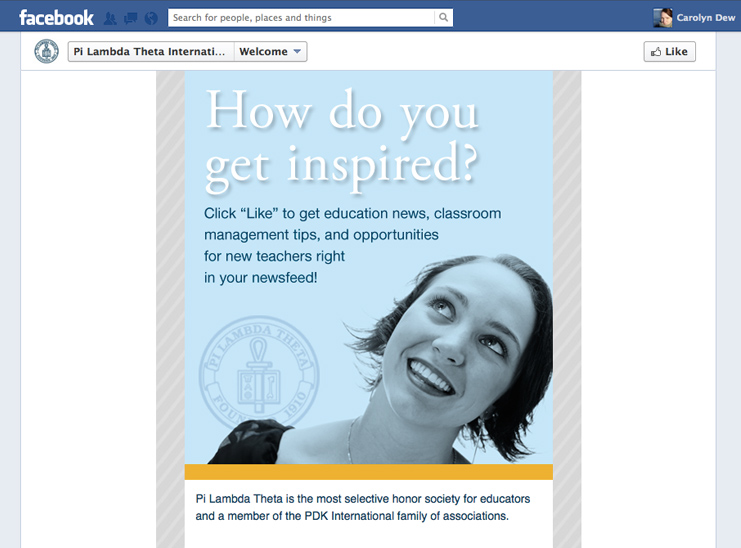
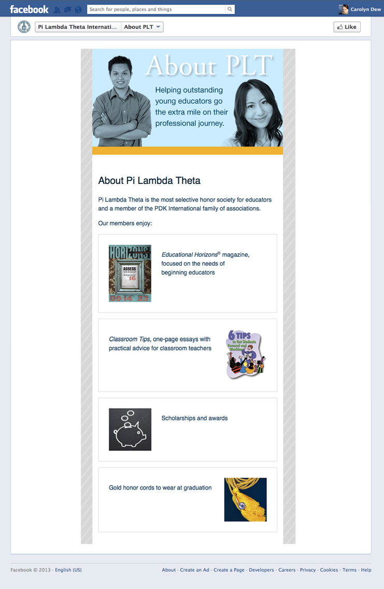

Graphic Design
Interaction Design
Nonprofit Communications
Graphic Design, UX, Nonprofit Communications
513 907 9531
carolyndew@gmail.com
Design
About
Screen
Marks
Print
Editorial
Back to main
Pi Lambda Theta Facebook page

Welcome Screen

About Tab
Pi Lambda Theta Facebook page
The Facebook presence for Pi Lambda Theta shows that the honor society is about much more than honor cords. It features engaging content from its signature publication and communicates a message of professional growth and inspiration.
Visit the page